Become a SQL database administrator and achieve 10x faster data operations
Do you want to become 14x faster at managing your data pipeline and data wrangling operations? Then read along to learn how to setup a SQL database on your local machine using Postgres and psql!
Eveyrhting starts for a reason…I was playing around with some messy data that I wanted to tame for a personal data science project. I automatically, without thinking, imported the data in Python.
I got bored. Python is not the elective language to clean and manage data. Personally, I have experience and I’m comfortable using SQL which is my go-to language to manage clean and wrangle data. SQL has the advantage of being extremely efficient and fast when it comes to do transformation and pre-exploratory data analysis, or pre-EDA.
What are the advantages to manipulate data with SQL versus Python? I recently came across an article that compared SQL and Python for ETL transformations. The small test found SQL being able to be up to 14.5x faster in data processing and data transformation.
In my experience, you want to use Python (or any other scripting language) when you need to fine tune an analysis but the data that you have at hand is mostly cleaned and already aggregated the way it should be. You also want to use Python when you need to recursively or continuously pull data from external sources. In between, after the raw data has been pulled from the source and before doing amazing ML models or visualizations, is the no-men land where SQL is your friend!
SQL is advantageous to standardize transformation and cleaning processes, it is often very readable and it has a low entry barrier. Additionally, in fast-paced business environments, where you need to answer quickly to business questions, SQL is often enough to make peace with your business stakeholders.
Quest starts…
Our goal is to become a SQL database administrator! This set up the context and where my quest started. I wanted to create my own internal SQL database on my local machine, so that I could handle data faster and with a flow that resemble the one you would generally use in a proper business setting.
A quick Google search made me realize that most of the guides and tutorials out there are not clean or clear. Also, the vast majority of what I found talks about setting up an AWS service. This would be, of course, the right choice if you need to productionize your environment. For example, if your business need high capacity in terms of storage and fast data retrieval. For my needs, I can go by using my laptop hard drive. Additionally, ßI see the beauty and the advantages of setting up a simple SQL database “old school”. This could be the first step to learn more about data engineering and how to build data pipelines.
I decided to roll up my sleeves and create my personal cheat sheet to create a local Postgres database and copy the data I want there.
Preliminary steps We want, of course, to have some data at hand. This process is probaly worth it when you have to deal with a lot of data (many MegaBytes or Gigabytes of data), however you can test the process with a small sample.
We need to decide which SQL environment to use. For this guide I used PostgreSQL because this is the SQL language I’m currently using and I discovered it has a number of additional features, including packages for spatial analysis.
A primer for the tutorial:
- Code snippets that need to be entered to progress towards our goal are highlighted by the word Run
- Variables that need to be modified are highlighted by square brakets and the text inside is the one you need to edit e.g. [modify_this_text]. You want to remove the brackets before running the command (unless specified otherwise!)
- Every command line begins with “$” however, this is a placeholder that indicates a new entry and command. Run the commands without this
- Once inside Postgres, you will see that “$” is substituted by “postgres=#” or “postgres=>”. These are placeholders for new line entries, so run the commands without these prefixes
- It is very important that, when inside the postgres environment, we close the command entry with a semi-column. Failing to do so will not execute the command, but it won’t give you an error either, thus leavin you baffled trying to understand what went wrong… (I learned it the hard way!)
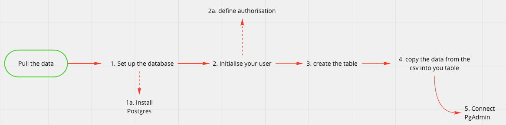
The flow representation of the steps we want to accomplishStep 1 and 2: Install Postgres, create user with the right privileges and create the database
To install Postgres we can use brew (If you don’t know brew, you can read how to install Brew and Python in one of my previous tutorial here).
From your terminal Run
$ brew update
$ brew install postgresql
After the installation is complete, we can verify that Postgres has been successfully installed
Run
$ postgres --version
You should see the installed version printed
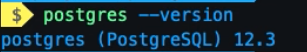
To start the service Run
$ brew services start postgresql
In case you need to stop or restart the service you can use the following commands
$ brew services stop postgresql
$ brew services restart postgresql
We can now enter the Postgres environment using the Terminal UI psql. Run
$ psql postgres
To verify the list of users currently present Run
$postgres=# \du
At this stage we want to ask ourselves if other users will need to access the database and wether they need to have full or limited access. In my case, I’m the only one accessing the database and there is no secuirity issue with the data I’m using. I will create only one user with full access rights.
In order to create your user Run
$postgres=# CREATE ROLE [user_name] WITH LOGIN PASSWORD ['pswd']
A quick check to verify that the user has been created Run
$postgres=# \du
You should see now the new user in listed and their attributes. Your user should have no Attributes right now, which is normal. We are going to give them to it now. Run
$postgres=# ALTER ROLE [user_name] CREATEDB
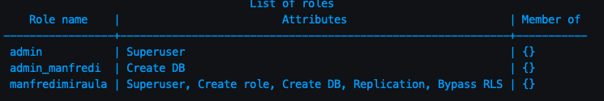
If we check again the user list you should see the “CREATEDB” attributes now listed under the user name. We can now exit from the environment and log in again using the new user we created
Run
$postgres=# \q
$ psql postgres -U [user_name]
Since the user we created doesn’t have admin privileges, you will see the prompt changed slightly. This is absolutely normal and reflects the fact that the user is not a super user.
We are ready to create our database Run
$postgres=> CREATE DB [database_name]
$postgres=> GRANT ALL PRIVILEGES ON DATABASE [database_name] TO [user_name]
The last command gave our user the correct privileges to edit and modify the database. We will need these privileges for the following steps.
To verify that everything went accordingly to plan Run
$postgres=> \connect [database_name]
You should see the prompt telling you you have been connected with the database.
Congrats! This conclude step 1 and 2 of our flow diagram
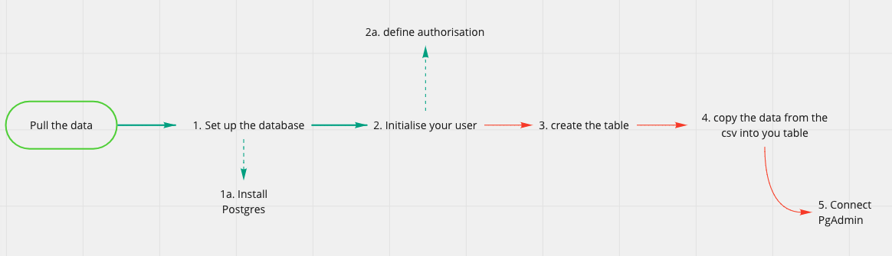
Step 1 and 2 accomplished!Step 3 and 4: create the table and copy the data A primer for this step. In order to create the table, we need to have a clear picture of what the table will look like. For instance, we could copy the data as they are or we might want to pre-process the data a little bit to change the column name or the data type. If you are not familiar with SQL and you don’t know what data types are, you can find my SQL 101 Introduction on SQL here. I often use Lucidchart to create and design database and table structures. This tool is a freemium but I found that the free version has all the requirements I need for basic database architecture.
The table creation step is quite simple, but requires some attention to details as we need to make sure that the column names and the data types correctly reflect thos of the raw data.
Run
$psql postgres -U [user_name]
$postgres=> CREATE TABLE [table_name] ([col1] [data_type], [col2] [data_type], ..., [coln] [data_type]);
Common data types that you can use:
- Integer
- Numeric (float numbers)
- Varchar(255) (here the 255 stands for the number of characters contained by the string. You can set up a fixed number if you know that the string will have exactly a certain number of characters or set max or a large number if you want to be flexible in the number of charcacters accepted)
- date
To check that our table was created correctly you can run Run
$postgres=> \dt
We are close to succeed in our quest. Last step remaining is to copy the data Run
$postgres=> \copy [table_name] (col1, col2, ..., coln) from '~/path/of/file' delimiter '[csv_delimiter]' csv header;
You may have different requirements here, depending the format of your source file. Here you can find the different options you can use while copying the data.
If everything was successful, you will see the prompt showing the numebr fo rows copied inside the table, that should be the same number of rows of you original source file.
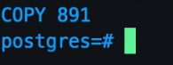
A further verification step, we can query the table directly Run
$postgres=> SELECT * FROM [table_name] LIMIT 10;
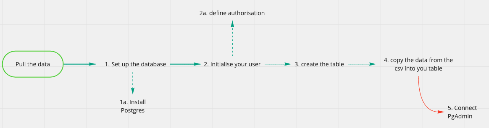
Step 3 and 4 accomplished!Congratulations on building your first SQL database!!! This concludes step 4 of our flow diagram
Hang on a second…!
You might be wondering at this point wether you will need to always query data from the terminal like we were still in the 80s and we were running on MS-DOS. The answer is not if you don’t want to…unless one of your favorite movie is Tron and you love bash scripting!
There are a number of Postgres UI available. I used PgAdmin and I can recommend it for its simplicity and the low memory required (which is indoubtely a plus if, like me, you have always trillions of web-apps and Chrome tabs opened!)
Download the most recent stable version of the UI from PgAdmin website and install it. We are going to connect the database we created in few simple steps.
Once installed, open the app and it will start a new page in your browser
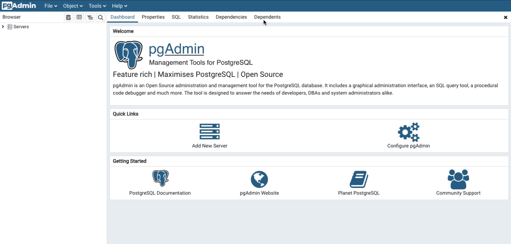
This is how PgAdmin will present itself once you installed it and started the serverThe following step will connect to the database
- Click on “Add New Server”
- Populate the field “Name” with the name of your database
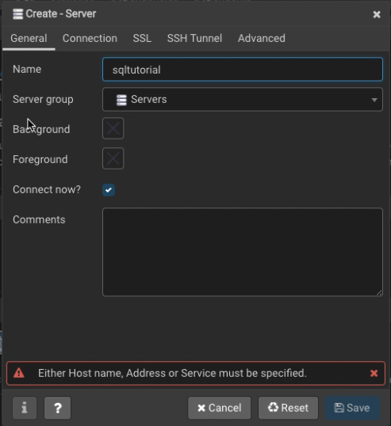
- In the Connection Tab
- Populate the field Host name/address with “localhost”
- Populate the field Port with 5432 (default)
- Populate the Username field with the username created with psql
- Insert the password you set up when creating the user
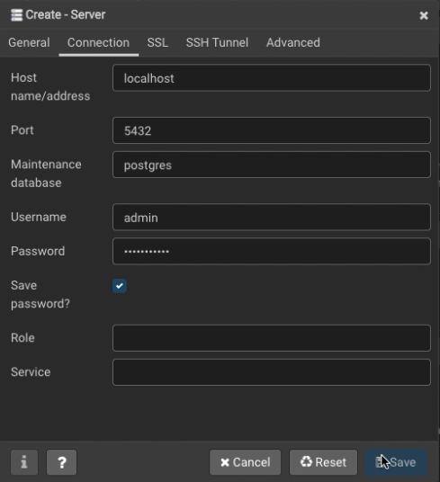
You should now access the server and a similar screen that will have the database you are connected with on the left hand side
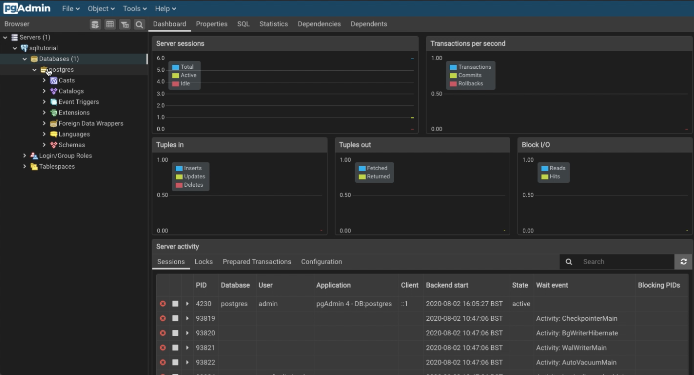
Inside PgAdmin!
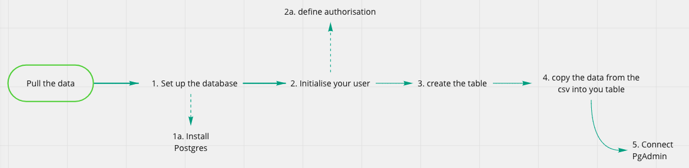
Step 5 completed!Welcome to day one of yout new life as a SQL database creator and administrator!
It is not because things are difficult that we do not dare; it is because we do not dare that things are difficult.. L.A. Seneca